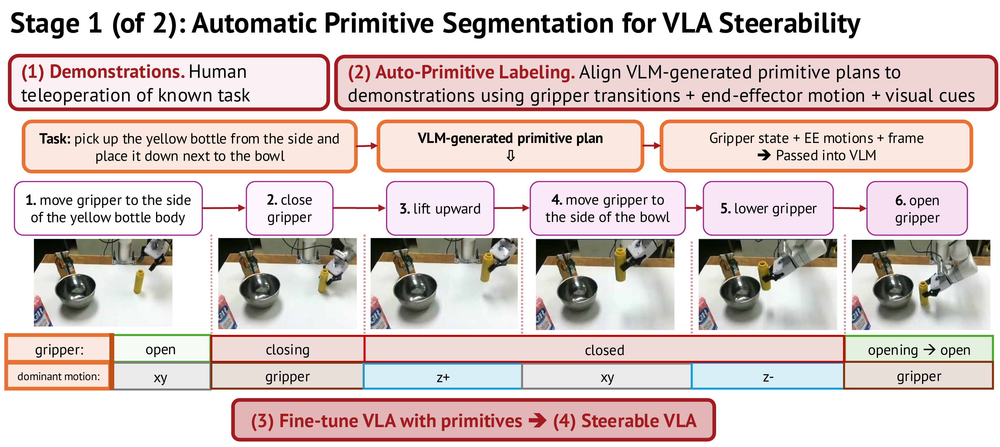
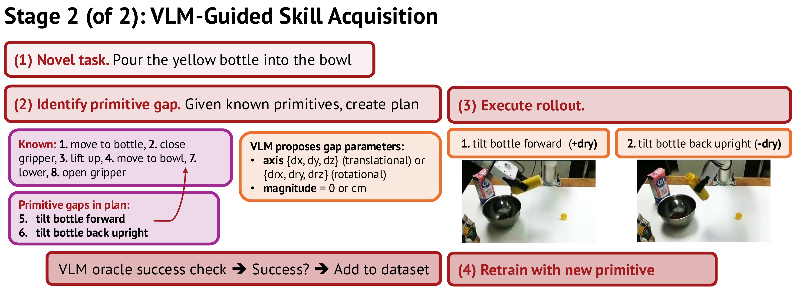
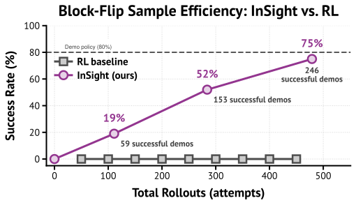
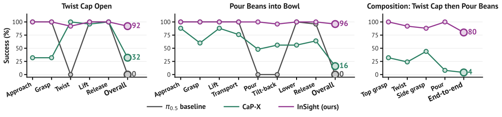
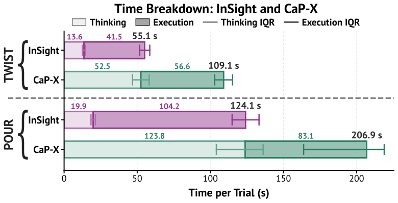
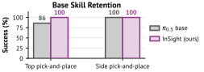

Vision-language-action (VLA) models can learn manipulation skills from demonstrations, but their capabilities are bounded by the skills in the training data. We present InSight, a framework that unlocks autonomous skill acquisition by rendering VLAs steerable at the primitive-action level (e.g., “move gripper to the bowl”, “lift upward”, “pour the bottle”). InSight consists of two primary stages: (1) an automated segmentation pipeline that partitions demonstrations into labeled primitives via VLM plan decomposition and end-effector poses to enable VLA primitive steerability, and (2) a VLM-guided data flywheel that identifies missing primitives required to accomplish a novel task, autonomously attempts demonstrations of the missing primitives with VLM-proposed low-level control, and automatically labels, stores, and integrates successful demonstrations into the VLA training set. We evaluate InSight across simulation and real-world manipulation tasks, including block flipping, drawer closing, sweeping, twisting, and pouring, without any human demonstrations of these target skills. Once learned, these primitives can be composed to execute novel, long-horizon tasks without additional human demonstrations. Our findings demonstrate that primitive steerability provides a practical foundation for continual skill acquisition in VLA policies.
Turn sound on
Consider a robot on Mars, trained only to scoop rocks. When a dust storm coats its solar panels, it must sweep them clean, a behavior it was never shown. A VLA can only perform the skills in its demonstrations, and acquiring a new one, through more data or reinforcement learning, is costly to repeat for every task.
Yet new skills are rarely fully novel: they recombine primitives the policy already knows. Sweeping and scooping share approach and lowering, differing only in a lateral push; flipping a block reuses pick-and-place's grasp-and-lift and adds a rotation. A standard VLA already encodes these primitives, but entangles them in a single task instruction, so they cannot be steered individually.
InSight makes the primitives steerable and uses a VLM as an active agent, not just a test-time planner over a fixed skill set, but one that flags the primitive a task is missing, drives the robot to acquire it, and retrains it back into the policy. Acquired skills then persist and recombine for future tasks, enabling continual learning.
Human demonstrations are automatically segmented into primitive-labeled trajectories by aligning a VLM-generated plan with gripper transitions and end-effector motion. Fine-tuning on these labels produces a VLA that can be steered one primitive at a time.
For a novel task, the VLM flags any primitive gap, drives a low-level controller to attempt it, and verifies success with a VLM oracle. Successful rollouts are labeled, stored, and used to retrain the VLA, forming a data flywheel that grows the skill set.

Stage 1. A demonstration is split into labeled primitives using gripper-state and dominant-motion cues.

Stage 2. The VLM identifies and parameterizes a missing primitive, the robot executes it, and a VLM oracle verifies success.
Implementation. InSight fine-tunes a π0.5 VLA with LoRA, and uses Gemini 3 Flash as the VLM across four roles: demonstration segmentation, task planning, primitive-gap proposal, and image-based success checking. The framework is agnostic to the underlying VLA.
Each skill below is acquired with no human demonstrations of that skill. Starting from demonstrations of a different task, InSight identifies the missing primitives, practices them, and folds them back into the policy. On the left is what the robot was trained on; on the right is the new skill it acquires.
Trained onpick-and-place
Acquired (no human demos)block flipping (rotate-block primitive)

With no human demonstrations of the flip, InSight practices the missing rotate-block primitive and climbs to 75% block-flip success over 479 rollouts. An RL baseline (SAC) given the same budget never completes a flip (0%).
Trained onopen drawer
Acquired (no human demos)close drawer, from an out-of-distribution open start
Two real-world primitives acquired separately, then chained into a long-horizon task.
Twisting open a cap
Trained onpick-and-place (top grasp)
Acquired (no human demos)twist open the bottle cap (new primitive: rotate cap)
Pouring
Trained onpick-and-place (side grasp)
Acquired (no human demos)pouring (new primitives: tilt to pour, tilt upright)
Composing into a long-horizon task
The separately acquired twist and pour skills chain into a 14-primitive task with no end-to-end demonstration.
Twist-then-pour: 14 primitives chained from the separately acquired twist and pour skills.

High per-primitive reliability compounds into 92% success on twisting, 96% on pouring, and 80% on the 14-primitive twist-then-pour composition, versus 32% / 16% / 4% for CaP-X and 0% even for a π0.5 baseline fine-tuned on the same demonstrations.

Because acquired primitives run as known skills, InSight spends far less VLM thinking time than a zero-shot planner: it finishes twisting in 55 s vs 109 s and pouring in 124 s vs 207 s against CaP-X, roughly 2× faster per trial.

After adding the twist and pour primitives, the unified VLA retains 100% on its original pick-and-place skills, and even improves top-grasp pick-and-place from 86% to 100%.
The motivating scenario: a contact-rich, non-prehensile skill acquired with no sweeping demonstrations.
Trained onscooping
Acquired (no human demos)sweeping (new primitive: lateral push)
InSight makes the individual primitives of a VLA steerable, which lets a VLM identify the primitives a new task needs, acquire the ones the policy is missing, and recombine them. A robot can extend itself to new tasks without demonstrations of the target skill, and the primitives it acquires can be reused on later tasks.
We thank Joseph Bowkett and Daniel Pastor for valuable discussions and for providing the 3D-printed scooper for the xArm. M. Wang is supported by the NASA NSTGRO Fellowship, and S. Tian was supported by the NSF GRFP.
@misc{wang2026insight,
title = {InSight: Self-Guided Skill Acquisition via Steerable VLAs},
author = {Wang, Maggie and Osterberg, Lars and Tian, Stephen and
Shorinwa, Ola and Wu, Jiajun and Schwager, Mac},
year = {2026},
eprint = {2606.24884},
archivePrefix = {arXiv}
}